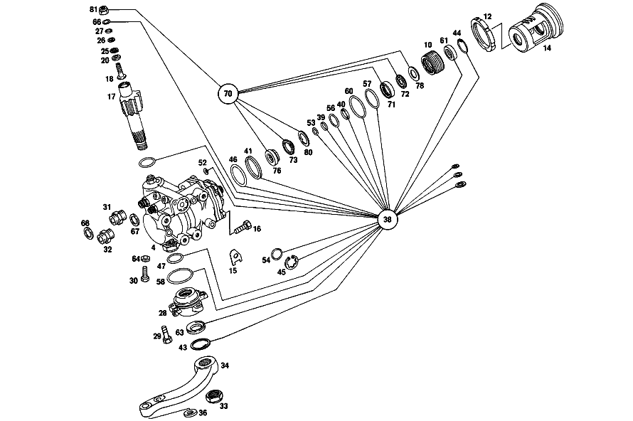

| № | Артикул | Название | Кол. | Примечание | Ограничение |
|---|---|---|---|---|---|
| 4 | A 107 460 17 01 | Рулевой механизм | 1 | Рулевое управление: Влево Z 10.957/01, Z 10.957/02, Z 10.957/03, Z 10.957/05, Z 10.957/06, Z 10.957/07, Z 10.957/08 [052] FROM CHASSIS SEE UNIT SPARE PARTS LIST 104 [697] ДЕТАЛЬ ПОСТАВЛЯЕТСЯ ТОЛЬКО/ИЛИ ТАКЖЕ КАК ЗАП.ЧАСТЬ | |
| 10 | A 107 460 02 86 | - РЕЗЬБ. ПАТРОН | 1 | Z 10.957/01, Z 10.957/02, Z 10.957/03, Z 10.957/05, Z 10.957/06, Z 10.957/07, Z 10.957/08 [052] FROM CHASSIS SEE UNIT SPARE PARTS LIST 104 | |
| 12 | A 107 990 00 60 | - Шлицевая гайка | 1 | Рулевое управление: Влево Z 10.957/01, Z 10.957/02, Z 10.957/03, Z 10.957/05, Z 10.957/06, Z 10.957/07, Z 10.957/08 [052] FROM CHASSIS SEE UNIT SPARE PARTS LIST 104 | |
| 14 | A 107 466 05 83 | - ПОРШЕНЬ | 1 | Z 10.957/01, Z 10.957/02, Z 10.957/03, Z 10.957/05, Z 10.957/06, Z 10.957/07, Z 10.957/08 [052] FROM CHASSIS SEE UNIT SPARE PARTS LIST 104 [417] БОЛЬШЕ НЕ ПОСТАВЛЯЕТСЯ, ЗАКАЗЫВАТЬ КОМПЛЕКТ ПОСТАВКИ | |
| 15 | A 107 994 00 05 | - предохранитель | - | Z 10.957/01, Z 10.957/02, Z 10.957/03, Z 10.957/05, Z 10.957/06, Z 10.957/07, Z 10.957/08 | |
| 15 | A 123 994 00 05 | - Стопорная шайба | 2 | Z 10.957/01, Z 10.957/02, Z 10.957/03, Z 10.957/05, Z 10.957/06, Z 10.957/07, Z 10.957/08 [052] FROM CHASSIS SEE UNIT SPARE PARTS LIST 104 | |
| 16 | A 094 990 41 06 | - Винт | 4 | Z 10.957/01, Z 10.957/02, Z 10.957/03, Z 10.957/05, Z 10.957/06, Z 10.957/07, Z 10.957/08 [052] FROM CHASSIS SEE UNIT SPARE PARTS LIST 104 | |
| 17 | A 107 462 02 12 | - ВАЛ РУЛЕВОЙ | - | Z 10.957/01, Z 10.957/02, Z 10.957/03, Z 10.957/05, Z 10.957/06, Z 10.957/07, Z 10.957/08 [415] ПРИМЕЧ. ПО ЗАМЕНЕ ПРИМЕНИМО ТОЛЬКО ДЛЯ СТОЯЩИХ РЯДОМ ПОЗИЦИЙ | |
| 17 | A 107 460 02 11 | - ВАЛ РУЛЕВОЙ | 1 | Z 10.957/01, Z 10.957/02, Z 10.957/03, Z 10.957/05, Z 10.957/06, Z 10.957/07, Z 10.957/08 [052] FROM CHASSIS SEE UNIT SPARE PARTS LIST 104 [417] БОЛЬШЕ НЕ ПОСТАВЛЯЕТСЯ, ЗАКАЗЫВАТЬ КОМПЛЕКТ ПОСТАВКИ | |
| 18 | A 107 462 00 71 | - болт | - | Z 10.957/01, Z 10.957/02, Z 10.957/03, Z 10.957/05, Z 10.957/06, Z 10.957/07, Z 10.957/08 [415] ПРИМЕЧ. ПО ЗАМЕНЕ ПРИМЕНИМО ТОЛЬКО ДЛЯ СТОЯЩИХ РЯДОМ ПОЗИЦИЙ | |
| 18 | A 123 462 00 71 | - болт | 1 | Z 10.957/01, Z 10.957/02, Z 10.957/03, Z 10.957/05, Z 10.957/06, Z 10.957/07, Z 10.957/08 [052] FROM CHASSIS SEE UNIT SPARE PARTS LIST 104 | |
| 20 | A 107 462 08 62 | - ШАЙБА УПОРНАЯ | 1 | ПО НЕОБХОДИМОСТИ 2.65 MM Z 10.957/01, Z 10.957/02, Z 10.957/03, Z 10.957/05, Z 10.957/06, Z 10.957/07, Z 10.957/08 [052] FROM CHASSIS SEE UNIT SPARE PARTS LIST 104 | |
| 20 | A 107 462 09 62 | - Прижимная шайба | 1 | ПО НЕОБХОДИМОСТИ 2.70 MM Z 10.957/01, Z 10.957/02, Z 10.957/03, Z 10.957/05, Z 10.957/06, Z 10.957/07, Z 10.957/08 [052] FROM CHASSIS SEE UNIT SPARE PARTS LIST 104 | |
| 20 | A 107 462 10 62 | - Прижимная шайба | 1 | ПО НЕОБХОДИМОСТИ 2.75 MM Z 10.957/01, Z 10.957/02, Z 10.957/03, Z 10.957/05, Z 10.957/06, Z 10.957/07, Z 10.957/08 [052] FROM CHASSIS SEE UNIT SPARE PARTS LIST 104 | |
| 20 | A 107 462 11 62 | - ШАЙБА УПОРНАЯ | 1 | ПО НЕОБХОДИМОСТИ 2.80 MM Z 10.957/01, Z 10.957/02, Z 10.957/03, Z 10.957/05, Z 10.957/06, Z 10.957/07, Z 10.957/08 [052] FROM CHASSIS SEE UNIT SPARE PARTS LIST 104 | |
| 20 | A 107 462 01 62 | - Прижимная шайба | 1 | ПО НЕОБХОДИМОСТИ 2,85 MM Z 10.957/01, Z 10.957/02, Z 10.957/03, Z 10.957/05, Z 10.957/06, Z 10.957/07, Z 10.957/08 [052] FROM CHASSIS SEE UNIT SPARE PARTS LIST 104 | |
| 20 | A 107 462 02 62 | - Прижимная шайба | 1 | ПО НЕОБХОДИМОСТИ 2.90 MM Z 10.957/01, Z 10.957/02, Z 10.957/03, Z 10.957/05, Z 10.957/06, Z 10.957/07, Z 10.957/08 [052] FROM CHASSIS SEE UNIT SPARE PARTS LIST 104 | |
| 20 | A 107 462 03 62 | - Прижимная шайба | 1 | ПО НЕОБХОДИМОСТИ 2.95 MM Z 10.957/01, Z 10.957/02, Z 10.957/03, Z 10.957/05, Z 10.957/06, Z 10.957/07, Z 10.957/08 [052] FROM CHASSIS SEE UNIT SPARE PARTS LIST 104 | |
| 20 | A 107 462 04 62 | - Прижимная шайба | 1 | ПО НЕОБХОДИМОСТИ 3.00 MM Z 10.957/01, Z 10.957/02, Z 10.957/03, Z 10.957/05, Z 10.957/06, Z 10.957/07, Z 10.957/08 [052] FROM CHASSIS SEE UNIT SPARE PARTS LIST 104 | |
| 20 | A 107 462 05 62 | - Прижимная шайба | 1 | ПО НЕОБХОДИМОСТИ 3.05 MM Z 10.957/01, Z 10.957/02, Z 10.957/03, Z 10.957/05, Z 10.957/06, Z 10.957/07, Z 10.957/08 [052] FROM CHASSIS SEE UNIT SPARE PARTS LIST 104 | |
| 20 | A 107 462 06 62 | - Прижимная шайба | 1 | ПО НЕОБХОДИМОСТИ 3.10 MM Z 10.957/01, Z 10.957/02, Z 10.957/03, Z 10.957/05, Z 10.957/06, Z 10.957/07, Z 10.957/08 [052] FROM CHASSIS SEE UNIT SPARE PARTS LIST 104 | |
| 25 | A 000 994 46 41 | - предохранитель | - | Z 10.957/01, Z 10.957/02, Z 10.957/03, Z 10.957/05, Z 10.957/06, Z 10.957/07, Z 10.957/08 [415] ПРИМЕЧ. ПО ЗАМЕНЕ ПРИМЕНИМО ТОЛЬКО ДЛЯ СТОЯЩИХ РЯДОМ ПОЗИЦИЙ | |
| 25 | A 004 994 92 41 | - предохранитель | 1 | Z 10.957/01, Z 10.957/02, Z 10.957/03, Z 10.957/05, Z 10.957/06, Z 10.957/07, Z 10.957/08 [052] FROM CHASSIS SEE UNIT SPARE PARTS LIST 104 | |
| 26 | A 107 462 07 62 | - Прижимная шайба | 1 | Z 10.957/01, Z 10.957/02, Z 10.957/03, Z 10.957/05, Z 10.957/06, Z 10.957/07, Z 10.957/08 [052] FROM CHASSIS SEE UNIT SPARE PARTS LIST 104 | |
| 27 | A 094 990 57 05 | - Стопорное кольцо | 1 | Z 10.957/01, Z 10.957/02, Z 10.957/03, Z 10.957/05, Z 10.957/06, Z 10.957/07, Z 10.957/08 [052] FROM CHASSIS SEE UNIT SPARE PARTS LIST 104 | |
| 28 | A 107 460 06 15 | - КРЫШКА | 1 | Рулевое управление: Влево Z 10.957/01, Z 10.957/02, Z 10.957/03, Z 10.957/05, Z 10.957/07 [417] БОЛЬШЕ НЕ ПОСТАВЛЯЕТСЯ, ЗАКАЗЫВАТЬ КОМПЛЕКТ ПОСТАВКИ | |
| 28 | A 114 460 00 15 | - Крышка | 1 | Рулевое управление: Влево Z 10.957/01, Z 10.957/02, Z 10.957/03, Z 10.957/05, Z 10.957/06, Z 10.957/07, Z 10.957/08 [052] FROM CHASSIS SEE UNIT SPARE PARTS LIST 104 | |
| 29 | A 114 990 00 01 | - БОЛТ | 4 | Z 10.957/01, Z 10.957/02, Z 10.957/03, Z 10.957/05, Z 10.957/06, Z 10.957/07, Z 10.957/08 [052] FROM CHASSIS SEE UNIT SPARE PARTS LIST 104 | |
| 30 | A 115 997 06 30 | - Резьбовая пробка | 1 | Z 10.957/01, Z 10.957/02, Z 10.957/03, Z 10.957/05, Z 10.957/06, Z 10.957/07, Z 10.957/08 [052] FROM CHASSIS SEE UNIT SPARE PARTS LIST 104 | |
| 31 | N 915013 010001 | - Штуцер | 1 | Z 10.957/01, Z 10.957/02, Z 10.957/03, Z 10.957/05, Z 10.957/06, Z 10.957/07, Z 10.957/08 [052] FROM CHASSIS SEE UNIT SPARE PARTS LIST 104 | |
| 32 | N 915013 006002 | - Штуцер | 1 | Z 10.957/01, Z 10.957/02, Z 10.957/03, Z 10.957/05, Z 10.957/06, Z 10.957/07, Z 10.957/08 [052] FROM CHASSIS SEE UNIT SPARE PARTS LIST 104 | |
| 33 | A 001 990 54 51 | - гайка | 1 | Z 10.957/01, Z 10.957/02, Z 10.957/03, Z 10.957/05, Z 10.957/06, Z 10.957/07, Z 10.957/08 [052] FROM CHASSIS SEE UNIT SPARE PARTS LIST 104 | |
| 34 | A 114 463 08 01 | Рулевая сошка | 1 | Рулевое управление: Влево Z 10.957/01, Z 10.957/02, Z 10.957/03, Z 10.957/05, Z 10.957/06, Z 10.957/07, Z 10.957/08 | |
| 36 | A 115 463 00 52 | Диск | 1 | Z 10.957/01, Z 10.957/02, Z 10.957/03, Z 10.957/05, Z 10.957/06, Z 10.957/07, Z 10.957/08 | |
| 38 | A 107 586 02 46 | РЕМКОМПЛЕКТ | - | Z 10.957/01, Z 10.957/02, Z 10.957/03, Z 10.957/05, Z 10.957/06, Z 10.957/07, Z 10.957/08 | |
| 38 | A 107 460 00 61 | набор уплотнений | 1 | КОМПЛЕКТ УПЛОТНЕНИЙ Z 10.957/01, Z 10.957/02, Z 10.957/03, Z 10.957/05, Z 10.957/06, Z 10.957/07, Z 10.957/08 [052] FROM CHASSIS SEE UNIT SPARE PARTS LIST 104 | |
| 39 | A 107 466 00 60 | - Уплотнительное кольцо | 1 | Z 10.957/01, Z 10.957/02, Z 10.957/03, Z 10.957/05, Z 10.957/06, Z 10.957/07, Z 10.957/08 [052] FROM CHASSIS SEE UNIT SPARE PARTS LIST 104 | |
| 40 | A 107 466 01 60 | - Уплотнительное кольцо | 1 | Z 10.957/01, Z 10.957/02, Z 10.957/03, Z 10.957/05, Z 10.957/06, Z 10.957/07, Z 10.957/08 [052] FROM CHASSIS SEE UNIT SPARE PARTS LIST 104 | |
| 41 | A 107 466 02 60 | - Уплотнительное кольцо | 1 | Z 10.957/01, Z 10.957/02, Z 10.957/03, Z 10.957/05, Z 10.957/06, Z 10.957/07, Z 10.957/08 [052] FROM CHASSIS SEE UNIT SPARE PARTS LIST 104 | |
| 43 | A 000 994 98 41 | - Стопорное кольцо | 1 | Z 10.957/01, Z 10.957/02, Z 10.957/03, Z 10.957/05, Z 10.957/06, Z 10.957/07, Z 10.957/08 [052] FROM CHASSIS SEE UNIT SPARE PARTS LIST 104 | |
| 44 | A 001 994 25 41 | - Стопорное кольцо | 1 | Z 10.957/01, Z 10.957/02, Z 10.957/03, Z 10.957/05, Z 10.957/06, Z 10.957/07, Z 10.957/08 [052] FROM CHASSIS SEE UNIT SPARE PARTS LIST 104 | |
| 45 | A 001 994 84 41 | - Стопорное кольцо | 1 | Z 10.957/01, Z 10.957/02, Z 10.957/03, Z 10.957/05, Z 10.957/06, Z 10.957/07, Z 10.957/08 [052] FROM CHASSIS SEE UNIT SPARE PARTS LIST 104 | |
| 46 | A 001 997 26 45 | - УПЛОТНИТ. КОЛЬЦО | - | Z 10.957/01, Z 10.957/02, Z 10.957/03, Z 10.957/05, Z 10.957/06, Z 10.957/07, Z 10.957/08 | |
| 46 | A 014 997 61 48 | - Уплотнительное кольцо | 1 | Z 10.957/01, Z 10.957/02, Z 10.957/03, Z 10.957/05, Z 10.957/06, Z 10.957/07, Z 10.957/08 [052] FROM CHASSIS SEE UNIT SPARE PARTS LIST 104 | |
| 47 | A 004 997 45 45 | - УПЛОТНИТ. КОЛЬЦО | - | Z 10.957/01, Z 10.957/02, Z 10.957/03, Z 10.957/05, Z 10.957/06, Z 10.957/07, Z 10.957/08 | |
| 47 | A 013 997 37 48 | - УПЛОТНИТ. КОЛЬЦО | 2 | Z 10.957/01, Z 10.957/02, Z 10.957/03, Z 10.957/05, Z 10.957/06, Z 10.957/07, Z 10.957/08 [052] FROM CHASSIS SEE UNIT SPARE PARTS LIST 104 | |
| 52 | A 009 997 42 45 | - Уплотнительное кольцо | 2 | Z 10.957/01, Z 10.957/02, Z 10.957/03, Z 10.957/05, Z 10.957/06, Z 10.957/07, Z 10.957/08 [052] FROM CHASSIS SEE UNIT SPARE PARTS LIST 104 | |
| 53 | A 009 997 43 45 | - Уплотнительное кольцо | 1 | Z 10.957/01, Z 10.957/02, Z 10.957/03, Z 10.957/05, Z 10.957/06, Z 10.957/07, Z 10.957/08 [052] FROM CHASSIS SEE UNIT SPARE PARTS LIST 104 | |
| 54 | A 009 997 44 45 | - Уплотнительное кольцо | 1 | Z 10.957/01, Z 10.957/02, Z 10.957/03, Z 10.957/05, Z 10.957/06, Z 10.957/07, Z 10.957/08 [052] FROM CHASSIS SEE UNIT SPARE PARTS LIST 104 | |
| 56 | A 009 997 45 45 | - Уплотнительное кольцо | 1 | Z 10.957/01, Z 10.957/02, Z 10.957/03, Z 10.957/05, Z 10.957/06, Z 10.957/07, Z 10.957/08 [052] FROM CHASSIS SEE UNIT SPARE PARTS LIST 104 | |
| 57 | A 009 997 46 45 | - Уплотнительное кольцо | 2 | Z 10.957/01, Z 10.957/02, Z 10.957/03, Z 10.957/05, Z 10.957/06, Z 10.957/07, Z 10.957/08 [052] FROM CHASSIS SEE UNIT SPARE PARTS LIST 104 | |
| 58 | A 009 997 47 45 | - Уплотнительное кольцо | 1 | Z 10.957/01, Z 10.957/02, Z 10.957/03, Z 10.957/05, Z 10.957/06, Z 10.957/07, Z 10.957/08 [052] FROM CHASSIS SEE UNIT SPARE PARTS LIST 104 | |
| 60 | A 009 997 48 45 | - Уплотнительное кольцо | 1 | Z 10.957/01, Z 10.957/02, Z 10.957/03, Z 10.957/05, Z 10.957/06, Z 10.957/07, Z 10.957/08 [052] FROM CHASSIS SEE UNIT SPARE PARTS LIST 104 | |
| 61 | A 006 997 81 46 | - УПЛОТНИТ. КОЛЬЦО | - | Z 10.957/01, Z 10.957/02, Z 10.957/03, Z 10.957/05, Z 10.957/06, Z 10.957/07, Z 10.957/08 | |
| 61 | A 012 997 80 47 | - УПЛОТНИТ. КОЛЬЦО | - | Z 10.957/01, Z 10.957/02, Z 10.957/03, Z 10.957/05, Z 10.957/06, Z 10.957/07, Z 10.957/08 | |
| 61 | A 011 997 67 46 | - УПЛОТНИТ. КОЛЬЦО | 1 | Z 10.957/01, Z 10.957/02, Z 10.957/03, Z 10.957/05, Z 10.957/06, Z 10.957/07, Z 10.957/08 [052] FROM CHASSIS SEE UNIT SPARE PARTS LIST 104 | |
| 63 | A 006 997 82 46 | - УПЛОТНИТ. КОЛЬЦО | - | Z 10.957/01, Z 10.957/02, Z 10.957/03, Z 10.957/05, Z 10.957/06, Z 10.957/07, Z 10.957/08 | |
| 63 | A 011 997 68 46 | - УПЛОТНИТ. КОЛЬЦО | - | Z 10.957/01, Z 10.957/02, Z 10.957/03, Z 10.957/05, Z 10.957/06, Z 10.957/07, Z 10.957/08 | |
| 63 | A 019 997 50 47 | - Уплотнительное кольцо | 1 | Z 10.957/01, Z 10.957/02, Z 10.957/03, Z 10.957/05, Z 10.957/06, Z 10.957/07, Z 10.957/08 [052] FROM CHASSIS SEE UNIT SPARE PARTS LIST 104 | |
| 64 | A 000 997 87 20 | - Уплотнительное кольцо | 1 | Z 10.957/01, Z 10.957/02, Z 10.957/03, Z 10.957/05, Z 10.957/06, Z 10.957/07, Z 10.957/08 [052] FROM CHASSIS SEE UNIT SPARE PARTS LIST 104 | |
| 66 | N 007603 012110 | - Уплотнительное кольцо | 1 | Z 10.957/01, Z 10.957/02, Z 10.957/03, Z 10.957/05, Z 10.957/06, Z 10.957/07, Z 10.957/08 [052] FROM CHASSIS SEE UNIT SPARE PARTS LIST 104 | |
| 67 | N 007603 012405 | - Уплотнительное кольцо | 1 | Z 10.957/01, Z 10.957/02, Z 10.957/03, Z 10.957/05, Z 10.957/06, Z 10.957/07, Z 10.957/08 [052] FROM CHASSIS SEE UNIT SPARE PARTS LIST 104 | |
| 68 | N 007603 016401 | - Уплотнительное кольцо | 1 | Z 10.957/01, Z 10.957/02, Z 10.957/03, Z 10.957/05, Z 10.957/06, Z 10.957/07, Z 10.957/08 [052] FROM CHASSIS SEE UNIT SPARE PARTS LIST 104 | |
| 70 | A 107 586 00 46 | РЕМКОМПЛЕКТ | - | Z 10.957/01, Z 10.957/02, Z 10.957/03, Z 10.957/05, Z 10.957/06, Z 10.957/07, Z 10.957/08 | |
| 70 | A 107 460 00 37 | ремкомплект | 1 | Z 10.957/01, Z 10.957/02, Z 10.957/03, Z 10.957/05, Z 10.957/06, Z 10.957/07, Z 10.957/08 [052] FROM CHASSIS SEE UNIT SPARE PARTS LIST 104 | |
| 71 | A 004 981 10 10 | - Сепаратор иг. подшипника | 2 | Z 10.957/01, Z 10.957/02, Z 10.957/03, Z 10.957/05, Z 10.957/06, Z 10.957/07, Z 10.957/08 [402] БОЛЬШЕ НЕ ПОСТАВЛЯЕТСЯ [052] FROM CHASSIS SEE UNIT SPARE PARTS LIST 104 | |
| 72 | A 000 981 48 18 | - Сепаратор иг. подшипника | 2 | Z 10.957/01, Z 10.957/02, Z 10.957/03, Z 10.957/05, Z 10.957/06, Z 10.957/07, Z 10.957/08 [052] FROM CHASSIS SEE UNIT SPARE PARTS LIST 104 | |
| 73 | A 000 981 49 18 | - Сепаратор иг. подшипника | 1 | Z 10.957/01, Z 10.957/02, Z 10.957/03, Z 10.957/05, Z 10.957/06, Z 10.957/07, Z 10.957/08 [052] FROM CHASSIS SEE UNIT SPARE PARTS LIST 104 | |
| 76 | A 000 981 54 27 | - Подшипник | 1 | Z 10.957/01, Z 10.957/02, Z 10.957/03, Z 10.957/05, Z 10.957/06, Z 10.957/07, Z 10.957/08 [052] FROM CHASSIS SEE UNIT SPARE PARTS LIST 104 | |
| 78 | A 001 990 55 40 | - Диск | 2 | Z 10.957/01, Z 10.957/02, Z 10.957/03, Z 10.957/05, Z 10.957/06, Z 10.957/07, Z 10.957/08 [052] FROM CHASSIS SEE UNIT SPARE PARTS LIST 104 | |
| 80 | A 001 990 56 40 | - ШАЙБА | 1 | Z 10.957/01, Z 10.957/02, Z 10.957/03, Z 10.957/05, Z 10.957/06, Z 10.957/07, Z 10.957/08 [052] FROM CHASSIS SEE UNIT SPARE PARTS LIST 104 | |
| 81 | A 001 990 70 51 | - гайка | - | Z 10.957/01, Z 10.957/02, Z 10.957/03, Z 10.957/05, Z 10.957/06, Z 10.957/07, Z 10.957/08 | |
| 81 | A 000 990 40 50 | - гайка | 1 | Z 10.957/01, Z 10.957/02, Z 10.957/03, Z 10.957/05, Z 10.957/06, Z 10.957/07, Z 10.957/08 [052] FROM CHASSIS SEE UNIT SPARE PARTS LIST 104 | |
| 83 | A 115 997 44 82 | ШЛАНГ | 1 | НАСОС К РУЛ.МЕХАНИЗМУ Рулевое управление: Влево Z 10.957/02, Z 10.957/03, Z 10.957/07 | |
| 92 | A 110 995 00 65 | хомут | - | Рулевое управление: Влево Z 10.957/01, Z 10.957/07 | |
| 92 | A 000 476 04 36 | Держатель шланга | 1 | Рулевое управление: Влево Z 10.957/01, Z 10.957/07 | |
| 94 | A 110 995 01 65 | хомут | 1 | 19 MM Рулевое управление: Влево Z 10.957/01, Z 10.957/07 | |
| 120 | A 115 460 00 24 | Разветвитель трубы | 1 | РУЛЕВОЙ МЕХАНИЗМ К МАСЛЯНОМУ БАЧКУ Рулевое управление: Влево Z 10.957/07 | |
| 132 | A 115 460 11 24 | ПРОВОД | 1 | РУЛЕВОЙ МЕХАНИЗМ К МАСЛЯНОМУ БАЧКУ Рулевое управление: Влево Z 10.957/03, Z 10.957/07 [402] БОЛЬШЕ НЕ ПОСТАВЛЯЕТСЯ | |
| 132 | A 115 460 15 24 | ПРОВОД | 1 | РУЛЕВОЙ МЕХАНИЗМ К МАСЛЯНОМУ БАЧКУ Рулевое управление: Влево Z 10.957/03, Z 10.957/07 [402] БОЛЬШЕ НЕ ПОСТАВЛЯЕТСЯ | |
| 138 | A 006 997 09 82 | Шланг | 0 | ТРУБКА ОБРАТНОЙ МАГИСТРАЛИ Z 10.957/01, Z 10.957/02, Z 10.957/03, Z 10.957/05, Z 10.957/06, Z 10.957/07, Z 10.957/08 [404] ЗАКАЗЫВАТЬ ПОГОННЫМИ МЕТРАМИ | |
| 138 | A 006 997 09 82 | Шланг | 1 | РУЛЕВОЙ МЕХАНИЗМ К МАСЛЯНОМУ БАЧКУ 80mm Рулевое управление: Влево Z 10.957/03, Z 10.957/07 | |
| 145 | N 916026 020001 | Хомут | - | 20\-27 MM Z 10.957/01, Z 10.957/02, Z 10.957/03, Z 10.957/05, Z 10.957/06, Z 10.957/07, Z 10.957/08 | |
| 145 | N 000000 000667 | Хомут | 2 | 23\-30 MM Z 10.957/01, Z 10.957/02, Z 10.957/03, Z 10.957/05, Z 10.957/06, Z 10.957/07, Z 10.957/08 | |
| 150 | A 115 460 07 83 | Масляный бак | 1 | Рулевое управление: Влево Z 10.957/03, Z 10.957/07 | |
| 154 | A 189 236 01 71 | - БОЛТ | 1 | Z 10.957/01, Z 10.957/02, Z 10.957/03, Z 10.957/05, Z 10.957/06, Z 10.957/07, Z 10.957/08 | |
| 157 | A 000 466 03 73 | - Стопорная шайба | 1 | Z 10.957/01, Z 10.957/02, Z 10.957/03, Z 10.957/05, Z 10.957/06, Z 10.957/07, Z 10.957/08 | |
| 160 | A 000 236 00 55 | - Фильтр | 1 | Z 10.957/01, Z 10.957/02, Z 10.957/03, Z 10.957/05, Z 10.957/06, Z 10.957/07, Z 10.957/08 | |
| 163 | A 000 236 00 76 | - Крышка | 1 | Z 10.957/01, Z 10.957/02, Z 10.957/03, Z 10.957/05, Z 10.957/06, Z 10.957/07, Z 10.957/08 | |
| 167 | A 001 993 14 01 | - пружина | 1 | Z 10.957/01, Z 10.957/02, Z 10.957/03, Z 10.957/05, Z 10.957/06, Z 10.957/07, Z 10.957/08 | |
| 170 | A 000 460 11 82 | - Крышка корпуса | 1 | Z 10.957/01, Z 10.957/02, Z 10.957/03, Z 10.957/05, Z 10.957/06, Z 10.957/07, Z 10.957/08 | |
| 174 | A 000 236 00 80 | - Уплотнительная прокладка | 1 | Z 10.957/01, Z 10.957/02, Z 10.957/03, Z 10.957/05, Z 10.957/06, Z 10.957/07, Z 10.957/08 | |
| 180 | A 115 460 00 24 | Разветвитель трубы | 1 | МАСЛ. БАЧОК К НАСОСУ Рулевое управление: Влево Z 10.957/07 | |
| 187 | N 900288 094102 | Хомут | 1 | Z 10.957/01, Z 10.957/02, Z 10.957/03, Z 10.957/05, Z 10.957/06, Z 10.957/07, Z 10.957/08 | |
| 192 | A 006 997 09 82 | Шланг | 1 | 430 MM Z 10.957/03, Z 10.957/07 | |
| 202 | A 110 987 05 41 | Кольцо | 1 | Рулевое управление: Влево Z 10.957/01, Z 10.957/03, Z 10.957/05, Z 10.957/07 | |
| 202 | A 115 466 00 82 | Резиновое кольцо | 1 | Рулевое управление: Влево Z 10.957/07 | |
| 207 | N 916026 020001 | Хомут | - | 20\-27 MM Z 10.957/01, Z 10.957/02, Z 10.957/03, Z 10.957/05, Z 10.957/06, Z 10.957/07, Z 10.957/08 | |
| 207 | N 000000 000667 | Хомут | 2 | 23\-30 MM Z 10.957/01, Z 10.957/02, Z 10.957/03, Z 10.957/05, Z 10.957/06, Z 10.957/07, Z 10.957/08 | |
| 227 | A 115 460 38 35 | Кронштейн | 1 | МАСЛЯНЫЙ БАЧОК Z 10.957/03, Z 10.957/07 | |
| 230 | A 000 990 96 91 | ГАЙКОДЕРЖАТЕЛЬ | - | Z 10.957/03, Z 10.957/07 | |
| 230 | A 000 990 94 91 | Гайкодержатель | 1 | КРОНШТЕЙН К ЛОНЖЕРОНУ Z 10.957/03, Z 10.957/07 | |
| 234 | N 000933 006102 | Винт | 1 | КРОНШТЕЙН К ЛОНЖЕРОНУ Z 10.957/03, Z 10.957/07 | |
| 237 | N 009021 006205 | Шайба | - | Z 10.957/03, Z 10.957/07 | |
| 237 | N 009021 006208 | Шайба | 1 | КРОНШТЕЙН К ЛОНЖЕРОНУ; 6 MM Z 10.957/03, Z 10.957/07 | |
| A 123 990 02 01 | БОЛТ | - | Z 10.957/01, Z 10.957/02, Z 10.957/03, Z 10.957/05, Z 10.957/06, Z 10.957/07, Z 10.957/08 | ||
| A 201 990 08 01 | болт | 3 | *** 80mm Z 10.957/01, Z 10.957/02, Z 10.957/03, Z 10.957/05, Z 10.957/06, Z 10.957/07, Z 10.957/08 [044] FOR REPAIRS ON SIDE MEMBER ONLY | ||
| A 000 994 46 41 | - предохранитель | - | Z 10.957/01, Z 10.957/02, Z 10.957/03, Z 10.957/05, Z 10.957/06, Z 10.957/07, Z 10.957/08 [415] ПРИМЕЧ. ПО ЗАМЕНЕ ПРИМЕНИМО ТОЛЬКО ДЛЯ СТОЯЩИХ РЯДОМ ПОЗИЦИЙ | ||
| A 004 994 92 41 | - предохранитель | 1 | Z 10.957/01, Z 10.957/02, Z 10.957/03, Z 10.957/05, Z 10.957/06, Z 10.957/07, Z 10.957/08 [052] FROM CHASSIS SEE UNIT SPARE PARTS LIST 104 | ||
| A 115 997 33 82 | ШЛАНГ | - | Рулевое управление: Влево Z 10.957/02, Z 10.957/03, Z 10.957/07 | ||
| A 115 460 05 83 | МАСЛЯНЫЙ БАЧОК | - | Рулевое управление: Влево Z 10.957/03, Z 10.957/07 | ||
| N 000315 006004 | Гайка | 1 | Z 10.957/01, Z 10.957/02, Z 10.957/03, Z 10.957/05, Z 10.957/06, Z 10.957/07, Z 10.957/08 |
Позиций: 112 · подписано на схемах: 105 · колесо — плавный зум в курсор, перетаскивание — пан, двойной клик — зум, клик по артикулу — скопировать.